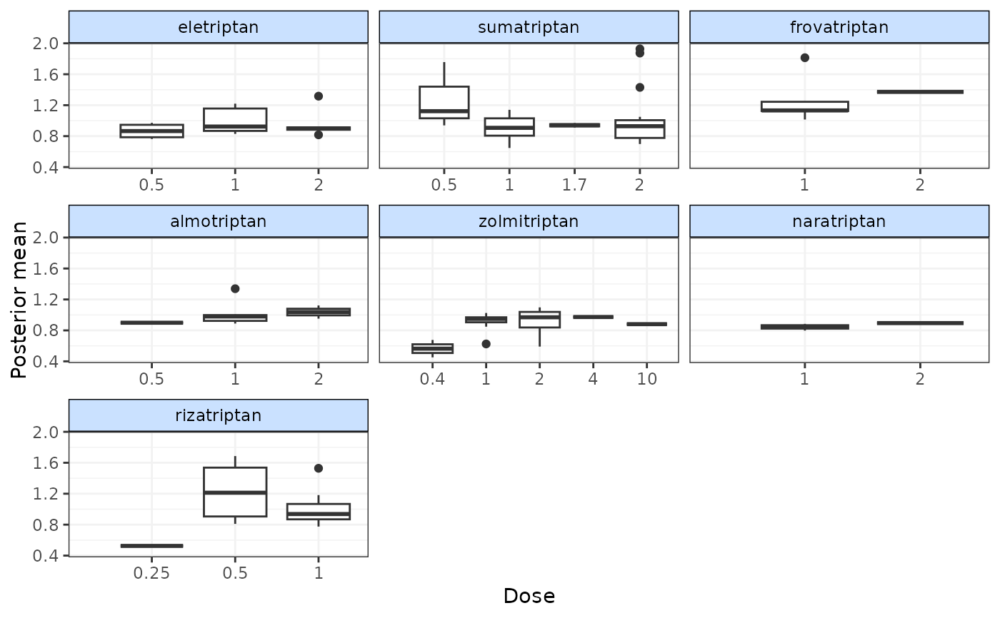
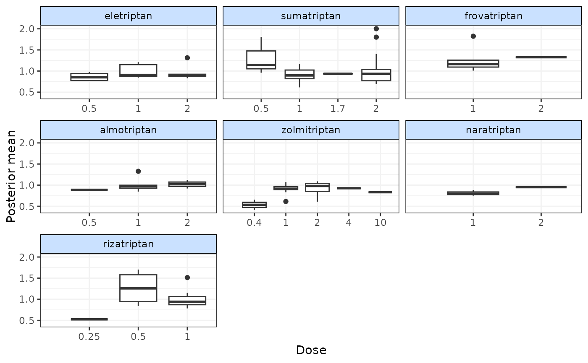
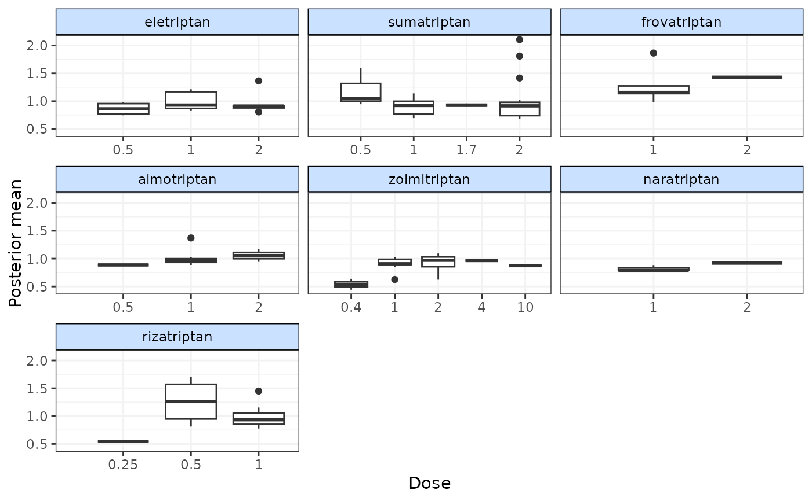
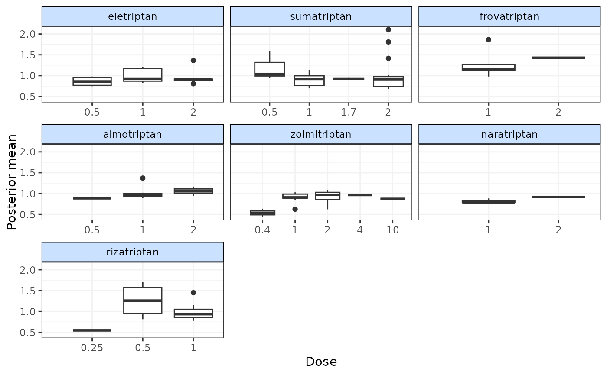

Plot deviance contributions from an MBNMA model
devplot.RdPlot deviance contributions from an MBNMA model
devplot(
mbnma,
plot.type = "box",
facet = TRUE,
dev.type = "resdev",
n.iter = mbnma$BUGSoutput$n.iter/2,
n.thin = mbnma$BUGSoutput$n.thin,
...
)Arguments
- mbnma
An S3 object of class
"mbnma"generated by running a dose-response MBNMA model- plot.type
Deviances can be plotted either as scatter points (
"scatter") or as boxplots ("box")- facet
A boolean object that indicates whether or not to facet (by agent for
MBNMAdoseand by treatment forMBNMAtime)- dev.type
STILL IN DEVELOPMENT FOR MBNMAdose! Deviances to plot - can be either residual deviances (
"resdev", the default) or deviances ("dev")- n.iter
number of total iterations per chain (including burn in; default: 2000)
- n.thin
thinning rate. Must be a positive integer. Set
n.thin> 1 to save memory and computation time ifn.iteris large. Default ismax(1, floor(n.chains * (n.iter-n.burnin) / 1000))which will only thin if there are at least 2000 simulations.- ...
Arguments to be sent to
ggplot2::geom_point()orggplot2::geom_boxplot
Value
Generates a plot of deviance contributions and returns a list containing the
plot (as an object of class(c("gg", "ggplot"))), and a data.frame of posterior mean
deviance/residual deviance contributions for each observation.
Details
Deviances should only be plotted for models that have converged successfully. If deviance
contributions have not been monitored in mbnma$parameters.to.save then additional
iterations will have to be run to get results for these.
For MBNMAtime, deviance contributions cannot be calculated for models with a multivariate likelihood (i.e.
those that account for correlation between observations) because the covariance matrix in these
models is treated as unknown (if rho = "estimate") and deviance contributions will be correlated.
Examples
# \donttest{
# Using the triptans data
network <- mbnma.network(triptans)
#> Values for `agent` with dose = 0 have been recoded to `Placebo`
#> agent is being recoded to enforce sequential numbering
# Run an Emax dose-response MBNMA and predict responses
emax <- mbnma.run(network, fun=demax(), method="random")
#> `likelihood` not given by user - set to `binomial` based on data provided
#> `link` not given by user - set to `logit` based on assigned value for `likelihood`
#> Compiling model graph
#> Resolving undeclared variables
#> Allocating nodes
#> Graph information:
#> Observed stochastic nodes: 182
#> Unobserved stochastic nodes: 197
#> Total graph size: 4115
#>
#> Initializing model
#>
# Plot deviances
devplot(emax)
#> `resdev` not monitored in mbnma$parameters.to.save.
#> additional iterations will be run in order to obtain results for `resdev`

# Plot deviances using boxplots
devplot(emax, plot.type="box")
#> `resdev` not monitored in mbnma$parameters.to.save.
#> additional iterations will be run in order to obtain results for `resdev`

# Plot deviances on a single scatter plot (not facetted by agent)
devplot(emax, facet=FALSE, plot.type="scatter")
#> `resdev` not monitored in mbnma$parameters.to.save.
#> additional iterations will be run in order to obtain results for `resdev`
 # A data frame of deviance contributions can be obtained from the object
#returned by `devplot`
devs <- devplot(emax)
#> `resdev` not monitored in mbnma$parameters.to.save.
#> additional iterations will be run in order to obtain results for `resdev`

head(devs$dev.data)
#> study arm mean facet fupdose groupvar studyID
#> 2 1 2 1.0419615 sumatriptan 0.5 1 27
#> 3 1 3 1.1401395 sumatriptan 1.0 1 37
#> 4 1 4 1.8093943 sumatriptan 2.0 1 66
#> 6 2 2 0.8816516 eletriptan 1.0 2 27
#> 7 2 3 0.9083872 eletriptan 2.0 2 37
#> 8 2 4 1.0059655 zolmitriptan 1.0 2 66
# Other deviance contributions not currently implemented but in future
#it will be possible to plot them like so
#devplot(emax, dev.type="dev")
# }
# A data frame of deviance contributions can be obtained from the object
#returned by `devplot`
devs <- devplot(emax)
#> `resdev` not monitored in mbnma$parameters.to.save.
#> additional iterations will be run in order to obtain results for `resdev`

head(devs$dev.data)
#> study arm mean facet fupdose groupvar studyID
#> 2 1 2 1.0419615 sumatriptan 0.5 1 27
#> 3 1 3 1.1401395 sumatriptan 1.0 1 37
#> 4 1 4 1.8093943 sumatriptan 2.0 1 66
#> 6 2 2 0.8816516 eletriptan 1.0 2 27
#> 7 2 3 0.9083872 eletriptan 2.0 2 37
#> 8 2 4 1.0059655 zolmitriptan 1.0 2 66
# Other deviance contributions not currently implemented but in future
#it will be possible to plot them like so
#devplot(emax, dev.type="dev")
# }